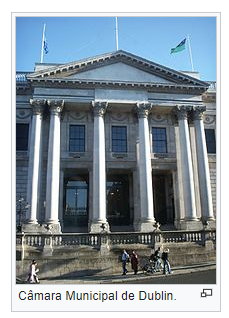

Dublin ou, em língua portuguesa, Dublim (em inglês Dublin [ˈdʌblən], localmente: [ˈdʊbᵊlən]; em irlandês Baile Átha Cliath [blʲa:ˈklʲiəh], ou Áth Cliath [aː klʲiə]) é a capital e maior cidade da Irlanda. O nome em inglês deriva da palavra irlandesa "Dubhlinn" (ocasionalmente também grafada Duibhlinn ou Dubh Linn), que significa "Lago Negro". Localiza-se na província de Leinster próxima ao ponto mediano da costa leste da Irlanda, sendo cortada pelo Rio Liffey e o centro da região de Dublin. Desde 1898 possui nível administrativo de condado (county-boroughs). Seus limites são os condados de Fingal a norte, Dublin meridional a sudoeste e Dun Laoghaire-Rathdown a sudeste. Tem uma população de 527 612 habitantes na cidade, e sua área metropolitana tem 1 809 156 habitantes. Fundada como um assentamento viquingue, foi o centro do Reino de Dublin e se tornou a principal cidade da Ilha após a invasão dos Normandos. A cidade cresceu de maneira rápida durante o século XVII; se tornou na época a segunda maior cidade do Império Britânico e a quinta maior da Europa. Dublin entrou em um período de estagnação após o Ato de União de 1800, mas continuou o centro econômico da Ilha. Após a Partição da Irlanda em 1922, virou a capital do Estado Livre Irlandês, e mais tarde, da República da Irlanda. Dublin é reconhecida como uma cidade global, com um ranking "Alpha-", colocando a cidade entre as 30 mais globalizadas do mundo.[13] Atualmente é o principal centro histórico, cultural, econômico, industrial e educacional da Irlanda.
As primeiras escritas sobre Dublin foram feitas no ano de 140 d.C. pelo astrônomo grego Ptolomeu, que a chamou de Eblana Civitas. Isso garante que Dublin é uma cidade com ao menos dois milênios de tradição, mas provavelmente ela exista há mais tempo que isso. No início do século X, duas colônias coexistiam na cidade. Onde moravam viquingues nórdicos, era chamada Dubh Linnia (ou Dyflin), e ficava em uma área que hoje se chama Wood Quay; e tinha Áth Cliath, a região céltica da cidade, mais distante do rio. Dublin tornou-se sede do poder inglês no século XII, após da parte sul do país pelo povo do norte britânico. Porém os estrangeiros absorveram os costumes locais, gerando uma fantástica mistura de culturas, o que minou o poder inglês de certa forma.
A cidade é governada pela Câmara Municipal de Dublin (anteriormente denominado Dublin Corporation), que é presidido pelo Lord Mayor de Dublin, que é eleito anualmente e reside na Mansion House. A Câmara Municipal está sedeada em dois grandes edifícios. As Reuniões do Conselho têm lugar na sede da Câmara Municipal, a antiga Royal Exchange, retomado para uso do governo da cidade em 1850. Muitos dos seus funcionários administrativos estão sedeados na controversa Civic Offices em Wood Quay. O Conselho Municipal é unicameral, com 52 membros, eleitos a cada cinco anos a partir de Eleições Locais. O partido com a maioria dos assentos, é quem decide o que se senta na comissão, as políticas a seguir, e que se torna Lord Mayor. Presidida pelo Senhor Presidente da Câmara, o Conselho tem um orçamento anual para despesa com a habitação, a gestão do tráfego, lixo, drenagem, planeamento, etc. A Dublin City Manager é responsável pela execução das decisões da Câmara Municipal.
Dublin possui um clima temperado marítimo, caracterizado por invernos frios e verões suaves. No entanto, contrariamente à crença popular, Dublin não tem experiência com alta pluviosidade como no Oeste da Irlanda, que recebe duas vezes mais do que Dublin. A capital irlandesa tem menos dias chuvosos, em média, do que Londres. A temperatura média máxima em Janeiro é de 8 °C, a temperatura média máxima em Julho é de 19 °C. Os meses ensolarados, em média, são Maio e Junho. O mês mais úmido, em média, é Dezembro com 76 mm de chuva. O mês mais seco é Fevereiro, com 50 mm. A precipitação total anual média (e outras formas de precipitação) é 732,7 mm, inferior a Sydney, Nova Iorque e até Dallas. Devido a se situar numa latitude norte, Dublin tem cerca de 19 horas de luz no Verão, e nove horas no Inverno.
Os ventos fortes, a partir de sistemas de tempestade do Atlântico, podem afectar Dublin, embora geralmente menos severamente do que outras partes da Irlanda. Os ventos mais fortes são mais prováveis durante meados de Inverno, mas pode ocorrer a qualquer momento, especialmente entre Outubro e Fevereiro. Durante um dos períodos tempestivos dos últimos tempos, uma rajada de 151 km/h foi registada no Aeródromo de Casement, em 24 de Dezembro de 1997.
A região de Dublin é o maior centro econômico da Irlanda. A cidade foi considerada, em 2009, como a quarta mais rica do mundo por poder de compra e a décima por renda pessoal. Foi considerada em 2011 de acordo com o Worldwide Cost of Living Survey, a 13.ª cidade mais cara da União Europeia e a 58.ª do mundo. Em 2005, cerca de 800 000 pessoas estavam empregadas na Região de Dublin, de qual 600 000 trabalhavam no setor de serviços e 200 000 no setor industrial. Provavelmente a mais famosa indústria é a cervejaria Guinness, produzida em St. James's Gate Brewery desde 1759. Durante os anos do Tigre Celta, em finais da década de 1990, um grande número de empresas de tecnologia da informação e da indústria farmacêutica, foram se estabelecendo em Dublin e nos seus subúrbios, e grande volume da indústria de informática, leva a que lhe chamem o Silicon Valley da Europa. A Microsoft Operations Center EMOA está localizada no Estado Sandyford Industrial, no sul da cidade, e o Google e a Amazon estabeleceram bases operacionais na cidade. Intel e Hewlett-Packard possuem grandes instalações fabris em Leixlip no Condado de Kildare, a oeste de Dublin. O Google, Yahoo!, Facebook, eBay e PayPal têm os seus hubs europeus em Dublin. A capital irlandesa tem uma vasta rede de vias rodoviárias, beneficiando também de acessos ferroviários. Na cidade, existem autocarros e metro que possibilitam uma fácil deslocação pela cidade. Por mar, Dublin usufrui de um porto e de um aeroporto.